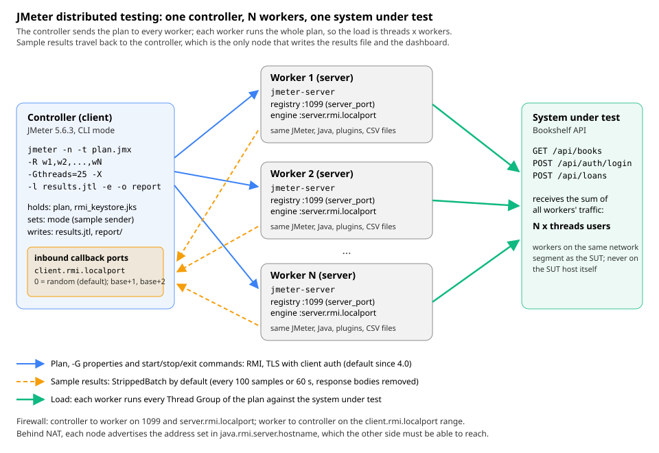

Distributed Testing
|
This content was generated with the assistance of AI and should be verified against the official documentation before being relied on in production. |
A single JMeter instance on a decent machine can drive a lot of traffic, but not an unlimited amount. When the load
generator’s CPU, memory or network becomes the bottleneck, the numbers measure the generator rather than the system
under test. Distributed testing spreads the load over several machines. JMeter’s built-in way to do that is remote
testing: one controller sends the test plan over Java RMI to several workers running jmeter-server. Each
worker runs the plan against the target and streams its sample results back to the controller, which writes the
results file. This page covers the architecture, a complete setup, RMI security and networking, how results travel
back, failed workers, and the alternatives that avoid RMI altogether.
It was written against Apache JMeter 5.6.3, the latest release at the time of writing, on Java 21 (5.6.x runs on Java
8 or newer; this guide recommends 17 or newer, and the planned 6.0 needs 17). Every property was checked against the
properties reference, the jmeter.properties file shipped with 5.6.3 and the 5.6.3 source code. The command output
shown on this page comes from a real 5.6.3 installation: two workers and a controller on one machine, using loopback
addresses and non-default ports so they could coexist. On real networks, use one machine per worker. JMeter 6.0 is not
released, and the planned changes in changes.xml on the development branch do not alter remote testing beyond the
Java 17 minimum. The books call the two roles master and slave and describe distributed testing without SSL
(Pro Apache JMeter ch. 6, JMeter 3.0; JMeter Cookbook ch. 5, JMeter 2.11). The current manual uses controller and
worker, or client and server, and RMI over SSL has been the default since 4.0.
This page builds on Running Tests in CLI Mode (the -r, -R,
-G and -X options in their context) and
Properties, Variables & Functions (why -J does not
reach the workers). The results file and the dashboard it produces are covered in
Listeners & Results Files and
HTML Dashboard Report.
When one generator is not enough
Distribute a test only after the plan is lean and the single generator has been tuned (CLI mode, few listeners, CSV results, enough heap). Distribution multiplies whatever inefficiency the plan has. The signs that a generator has reached its limit are the same as on any other machine:
-
CPU of the JMeter process above roughly 80 % for long periods, so timers fire late and response times include time spent waiting for a CPU;
-
garbage collection pauses visible in the GC log, or heap close to
-Xmx; -
the network interface close to its bandwidth, or many sockets in
TIME_WAIT; -
throughput that stops growing when threads are added while the server under test is still idle.
The step-by-step tutorial in the manual gives a rough figure: a single JMeter client on a recent 2-3 GHz CPU can handle 1,000 to 2,000 threads, depending on the type of test. The figure is old and depends heavily on think time, response size and the elements in the plan. Measure your own generator rather than relying on it.
Worked example. The Bookshelf load profile uses 50 threads, a 3 s think time and a typical 0.2 s response time.
By Little’s Law each thread does 1 / (3 + 0.2) ≈ 0.31 requests per second, so 50 threads produce about 15.6 req/s.
One generator handles that easily. A target of 2,000 concurrent users with the same think time means
2,000 / 3.2 ≈ 625 req/s. If measurement shows that one generator stays healthy up to 500 threads for this plan, four
workers with -Gthreads=500 are needed, and a fifth gives headroom for a failed node.
Architecture: the whole plan runs on every worker

The manual defines three roles:
| Role | What it does | How it is started |
|---|---|---|
Controller (client) |
Loads the plan, sends it to every worker, starts and stops the test, receives the sample results and writes the results file, the summariser lines and the dashboard. It generates no load itself. |
|
Worker (server) |
Runs the plan it receives, exactly as a local CLI run would, and sends every sample back to the controller. |
|
Target |
The system under test; it only sees HTTP (or JDBC, JMS…) traffic from the workers. |
Your own deployment, here the Bookshelf API |
The most important rule is in the manual’s own words: JMeter does not distribute the load between servers, and each one runs the full test plan. If the Thread Group says 1,000 threads and there are 6 servers, 6,000 threads are injected. To reproduce the 50-thread Bookshelf profile with two workers, give each worker 25 threads:
| Setup | threads per worker |
Workers | Total concurrent users |
|---|---|---|---|
Single machine, |
50 |
1 |
50 |
Distributed, |
25 |
2 |
50 |
Distributed, |
50 |
2 |
100 |
Everything else in the plan multiplies in the same way. A Constant Throughput Timer or Precise Throughput Timer
target applies per worker, so the total throughput target is the per-worker value times the number of workers. The
same is true for an Open Model Thread Group schedule (rate(10/sec) on four workers is 40 requests per second in
total), for a Throughput Shaping Timer and for an Arrivals Thread Group. A ramp-up of 60 s means every worker ramps its
own threads over 60 s at the same time, so the total ramp rate is the per-worker rate times the number of workers.
Load-shaping plugins and the Open Model Thread Group are covered in
Open Model & Throughput Control and
Custom Thread Groups & Load Shaping.
Some things are not shared between workers, because each worker is a separate JVM:
-
a Critical Section Controller locks only inside one JVM;
-
a Synchronizing Timer releases the threads of one worker, not of all workers;
-
counters,
__counter,__threadNumand CSV Data Set Config cursors start from the beginning on every worker, so two workers read the same lines of the same CSV file unless the files differ.
What travels to the workers and what does not
| Item | Sent by the controller? | Notes |
|---|---|---|
The test plan tree |
Yes |
No need to copy the |
|
Yes |
Applied on each worker before the test starts. Read in the plan with |
|
No |
Local to the controller JVM only. A |
CSV files, payload files, certificates, protos, JDBC drivers |
No |
The manual is explicit: data files are not sent. They must exist at the expected path on every worker. |
Plugins and extra jars ( |
No |
Every worker needs the same plugins at the same versions as the controller. |
JMeter and Java versions |
No |
The manual asks for exactly the same JMeter version and the same Java version on all nodes. |
|
No (local) |
Read when the worker starts. Useful for per-worker values, such as a different data file per worker. |
Source: Remote Testing (User Manual)
A remote start, step by step
The sequence below follows what 5.6.3 does when the controller is started with -R (from DistributedRunner and
ClientJMeterEngine in the source code).
Two consequences follow from this sequence. First, the connection is opened in both directions: the controller
calls the worker, and the worker calls back to listener objects exported by the controller. A firewall that only
allows controller-to-worker traffic lets the test start but no results arrive. Second, the -G properties are set
after the plan is configured and before it runs, which is why ${__P(...)} in Thread Group fields picks them up.
Setup step by step
The steps below set up two workers, gen1.internal and gen2.internal, and a controller, all on Linux or macOS, to
run bookshelf-load.jmx with 25 threads per worker. Replace the names with your own hosts; on Windows the scripts end
in .bat.
Step 0: prepare every node
On the controller and on every worker:
-
Install the same JMeter version (5.6.3) and the same Java version (for example Temurin 21) as described in Installation & Configuration.
-
Install the same plugins at the same versions, for example with the Plugins Manager command line and
install-for-jmx(see Plugins & Plugins Manager). -
Copy the data files to the same path on every worker, for example
/opt/bookshelf-perf/data/users.csvand/opt/bookshelf-perf/data/search-terms.csv. Pass that directory as a-Gproperty so the plan does not depend on the working directory of each worker. -
Make sure the controller can reach every worker on the RMI ports, and every worker can reach the controller back (see the section on firewalls below).
-
Synchronise the clocks (NTP). Timestamps in the results file come from the workers, and the dashboard’s time-based graphs assume they agree.
If every worker needs different data (unique user accounts, for example), split the file and give each worker its own
part. The manual suggests exactly that: different property values in each worker’s user.properties, or different
content in the data files.
# Split 2,000 placeholder accounts into two files, one per worker (header kept in each)
head -1 users.csv > users-gen1.csv; head -1 users.csv > users-gen2.csv
tail -n +2 users.csv | awk 'NR % 2 == 1' >> users-gen1.csv
tail -n +2 users.csv | awk 'NR % 2 == 0' >> users-gen2.csv
scp users-gen1.csv gen1.internal:/opt/bookshelf-perf/data/users.csv
scp users-gen2.csv gen2.internal:/opt/bookshelf-perf/data/users.csvStep 1: create the RMI keystore and copy it to every node
Since 4.0, RMI between controller and workers uses TLS by default, and JMeter does not ship keys. The simplest setup is
one key pair shared by all nodes. bin/create-rmi-keystore.sh (or .bat) is a thin wrapper around keytool: it
generates a 2048-bit RSA key with the alias rmi, valid for 7 days, in rmi_keystore.jks with the password
changeit, and passes any extra arguments to keytool. Run it interactively as in the manual, answering rmi as the
first and last name, or non-interactively by passing -dname:
cd apache-jmeter-5.6.3/bin
./create-rmi-keystore.sh -dname "CN=rmi, OU=Performance, O=Bookshelf, L=Example City, ST=Example State, C=XY"Output on 5.6.3 with Java 21:
Generating 2,048 bit RSA key pair and self-signed certificate (SHA384withRSA) with a validity of 7 days
for: CN=rmi, OU=Performance, O=Bookshelf, L=Example City, ST=Example State, C=XY
Copy the generated rmi_keystore.jks to jmeter/bin folder or reference it in property 'server.rmi.ssl.keystore.file'Then copy the same rmi_keystore.jks to every worker and to the controller, either into bin/ or anywhere else with
server.rmi.ssl.keystore.file pointing at it. Three details matter in practice:
-
The default path is relative to the working directory of the JMeter process, not to
bin/. A controller started from another directory with the defaultserver.rmi.ssl.keystore.file=rmi_keystore.jksfailed in the test run withjava.io.FileNotFoundException: rmi_keystore.jks (No such file or directory). Set an absolute path inuser.propertieson every node. -
Seven days is short. A keystore created on Monday breaks the following Monday’s test with a TLS handshake error. For a longer-lived environment, run the same
keytoolcommand as the script directly, with a longer-validity:keytool -genkey -keyalg RSA -alias rmi -keystore rmi_keystore.jks -storepass changeit -validity 90 -keysize 2048(and a real password, set inserver.rmi.ssl.keystore.passwordon every node). -
The file is PKCS12 despite its name. Since Java 9,
keytoolcreates PKCS12 keystores by default;keytool -liston the generated file reportsKeystore type: PKCS12. JMeter’s defaultserver.rmi.ssl.keystore.type=JKSstill reads it on Java 21, because the JDK’s JKS keystore type also loads PKCS12 files. Settingserver.rmi.ssl.keystore.type=PKCS12makes the intent explicit.
Treat the keystore as a credential. Anyone holding it can connect to a worker and make it run an arbitrary plan, which includes OS Process Samplers and Groovy scripts. Never commit it to version control; create it per environment and distribute it like any other secret (for example as a Kubernetes Secret, see Secrets).
Step 2: start the workers
On each worker:
cd /opt/bookshelf-perf
/opt/apache-jmeter-5.6.3/bin/jmeter-server \
-Djava.rmi.server.hostname=10.0.1.11 \
-Jserver.rmi.localport=4000 \
-Jserver.rmi.ssl.keystore.file=/opt/bookshelf-perf/rmi_keystore.jksWhat the options do:
-
jmeter-serverrunsjmeter -Dserver_port=${SERVER_PORT:-1099} -s -j jmeter-server.logplus your arguments, so the worker starts its own RMI registry on port 1099 (or onSERVER_PORTif set), and logs tojmeter-server.login the current directory. -
-Djava.rmi.server.hostnameis the address the worker advertises to the controller, which is explained under NAT below. Without it, JMeter uses the address the host name resolves to, and refuses to start if that is a loopback address. -
-Jserver.rmi.localportfixes the port of the remote engine object; without it the port is random.
A worker that started correctly prints a "Created remote object" line. From the test run (loopback addresses, a non-default registry port and the keystore path shortened):
Using local port: 24000
Created remote object: UnicastServerRef2 [liveRef: [endpoint:[127.0.0.1:24000,SSLRMIServerSocketFactory(host=/127.0.0.1, keyStoreLocation=.../rmi_keystore.jks, type=JKS, ...and its jmeter-server.log ends with:
INFO o.a.j.r.SSLRMIServerSocketFactory: Created SSLSocket: [SSL: ServerSocket[addr=/127.0.0.1,localport=24000]]
INFO o.a.j.e.RemoteJMeterEngineImpl: Starting backing engine on 21099
INFO o.a.j.e.RemoteJMeterEngineImpl: Creating RMI registry (server.rmi.create=true)
INFO o.a.j.e.RemoteJMeterEngineImpl: Bound to RMI registry on port 21099Only one JMeter server can run per host unless each uses a different registry port (SERVER_PORT=1664 jmeter-server,
then host:1664 in the controller’s host list). A worker keeps running after a test and accepts the next one, unless
the controller passes -X or the worker sets server.exitaftertest=true. Its console prints one line when a test
starts and one when it ends:
Starting the test on host 127.0.0.1:21105 @ 2026 Oct 14 13:31:47 CEST (1791977507439)
Finished the test on host 127.0.0.1:21105 @ 2026 Oct 14 13:31:59 CEST (1791977519425)Step 3: tell the controller where the workers are
Either list the workers in the controller’s user.properties, which the GUI’s Remote Start menu and -r use, or
pass them on the command line with -R, which has the same effect as -r -Jremote_hosts=.... The default value of
remote_hosts is 127.0.0.1, and a host without :port uses server.rmi.port (1099).
# bin/user.properties on the controller (JMeter properties)
remote_hosts=gen1.internal,gen2.internal
# with a non-default registry port: remote_hosts=gen1.internal:1664,gen2.internal:1664
server.rmi.ssl.keystore.file=/opt/bookshelf-perf/rmi_keystore.jksjava.rmi.server.hostname is a Java system property, not a JMeter property: in user.properties it would have no
effect. Put it in bin/system.properties, whose entries JMeter sets as system properties at start-up, or pass
-Djava.rmi.server.hostname=10.0.1.10 on the command line:
# bin/system.properties on the controller
java.rmi.server.hostname=10.0.1.10Step 4: run the test from the CLI
The manual is explicit that GUI mode is for debugging; real distributed tests start from a CLI controller:
jmeter -n -t bookshelf-load.jmx \
-R gen1.internal,gen2.internal \
-Gthreads=25 -Grampup=60 -Gduration=660 \
-Ghost=bookshelf.internal -Gport=8080 \
-Gdata_dir=/opt/bookshelf-perf/data \
-l results/bookshelf-dist.jtl -j results/controller.log \
-f -e -o results/report \
-X-
-Rlists the workers and overridesremote_hosts;-rusesremote_hostsas configured. -
-Gsends each property to every worker.-Gfile.properties(a value without=) sends every property in that file; a file that cannot be read is silently ignored, so checkcontroller.logfor "Setting Global properties from the file". -
-l,-eand-owork on the controller, which is the only node that writes results. -
-Xasks every worker to exit at the end of the test. Use it when workers are started per test (CI, containers); leave it out when the same workers serve several runs.
A real run of the same command, scaled down to 5 threads per worker for 20 s against a local stub of the Bookshelf API (workers on ports 21099 and 21100 of the same machine):
Creating summariser <summary>
Created the tree successfully using bookshelf-load.jmx
Configuring remote engine: 127.0.0.1:21099
Configuring remote engine: 127.0.0.1:21100
Starting distributed test with remote engines: [127.0.0.1:21100, 127.0.0.1:21099] @ 2026 Oct 14 13:29:39 CEST (1791977379870)
summary + 1 in 00:00:01 = 1.1/s Avg: 61 Min: 61 Max: 61 Err: 0 (0.00%) Active: 1 Started: 1 Finished: 0
Remote engines have been started:[127.0.0.1:21100, 127.0.0.1:21099]
Waiting for possible Shutdown/StopTestNow/HeapDump/ThreadDump message on port 4447
summary + 2 in 00:00:12 = 0.2/s Avg: 22 Min: 4 Max: 41 Err: 0 (0.00%) Active: 10 Started: 10 Finished: 0
summary = 3 in 00:00:13 = 0.2/s Avg: 35 Min: 4 Max: 61 Err: 0 (0.00%)
summary + 200 in 00:00:07 = 29.7/s Avg: 10 Min: 2 Max: 223 Err: 2 (1.00%) Active: 5 Started: 10 Finished: 5
summary = 203 in 00:00:20 = 10.3/s Avg: 10 Min: 2 Max: 223 Err: 2 (0.99%)
summary + 140 in 00:00:01 = 100.1/s Avg: 4 Min: 2 Max: 29 Err: 0 (0.00%) Active: 0 Started: 10 Finished: 10
summary = 343 in 00:00:21 = 16.2/s Avg: 8 Min: 2 Max: 223 Err: 2 (0.58%)
Tidying up remote @ 2026 Oct 14 13:30:02 CEST (1791977402222)
... end of runThree things in this output are specific to distributed runs:
-
Active: 10 Started: 10with-Gthreads=5: the summariser counts the threads of all workers, which confirms that the load is threads × workers. -
The bursts (2 samples in 12 s, then 200 in 7 s and 140 in 1 s): with the default StrippedBatch sender, workers send results in batches of 100 samples or every 60 s, so the controller’s live view lags and arrives in lumps. The load on the target was steady; the section on sample senders shows the same test with a smoother mode.
-
Thread names carry the worker: since 5.0 every thread name is prefixed with the engine’s host and port, as in this line of
bookshelf-dist.jtl:
timeStamp,elapsed,label,responseCode,responseMessage,threadName,dataType,success,failureMessage,bytes,sentBytes,grpThreads,allThreads,URL,Latency,IdleTime,Connect
1791977382856,41,GET /api/books,200,OK,127.0.0.1:21099-Readers 1-1,text,true,,225,126,1,1,http://127.0.0.1:28080/api/books,53,0,33The prefix makes the dashboard’s Active Threads Over Time correct for distributed runs. The grpThreads and
allThreads columns, however, are counted per worker (they were 5 in this run, never 10), so a step analysis that
groups samples by allThreads must group by worker too, or count the workers' threads together. The dashboard’s
Time Vs Threads graph has the same per-server limitation, which the manual documents.
Step 5 (optional): start from the GUI to check the setup
For a first check of the network and the keystore, the GUI is convenient. With remote_hosts set, the Run menu
gains these entries:
| Menu item | Effect |
|---|---|
Run → Remote Start → host |
Sends the plan to one worker and starts it. |
Run → Remote Start All (Ctrl+Shift+R) |
Starts the plan on every host in |
Run → Remote Stop → host / Remote Stop All |
Stops the test now on one or all workers (like Stop). |
Run → Remote Shutdown → host / Remote Shutdown All |
Lets current samples finish, then stops (like Shutdown). |
Run → Remote Exit → host / Remote Exit All |
Makes the worker process exit. |
Do not use the GUI controller for the measured run: GUI listeners on the controller then process every sample from every worker.
Command-line options for distributed runs
| Option | Long form | Meaning |
|---|---|---|
|
|
Run JMeter in server (worker) mode; |
|
|
Start the test on every host in |
|
|
Start the test on these hosts; overrides |
|
|
Define a JMeter property on every worker (not on the controller). May be repeated. |
|
|
Send every property in a local file to every worker. |
|
|
Make the workers exit at the end of a CLI test. |
|
|
Define a property on the local JVM only: on the controller for sender settings such as |
|
|
Define a Java system property locally, for example |
-r, -R and -X are accepted only together with -n; without it JMeter prints "-r and -R and -X are only valid in
non-GUI mode" and stops. The full list of options
is on Running Tests in CLI Mode.
RMI properties
All of these are JMeter properties: put them in user.properties on the node they apply to, or pass them with -J
when starting that node. Defaults are those of 5.6.3.
| Property | Node | Default | Meaning |
|---|---|---|---|
|
Controller |
|
Comma-separated workers, each |
|
Worker |
1099 (set by |
Port of the RMI registry the worker creates. When it is not set, |
|
Both |
1099 |
Default registry port: used by the worker when |
|
Worker |
0 (random) |
Fixed port for the worker’s remote engine object, so a firewall can allow it. The properties reference shows 4000,
which is the commented example in |
|
Worker |
true |
The worker creates the RMI registry itself (since 2.3.1). Set to false only to use an external |
|
Worker |
not set |
Set to |
|
Controller |
0 (random) |
Base for the ports of the listener objects the controller exports for the workers' callbacks. The manual says JMeter opens up to three ports beginning with this one; in the 5.6.3 test run the controller used base + 1 and base + 2. See the firewall section for a limitation with SSL. |
|
Controller |
1 |
Total number of attempts to configure each worker. |
|
Controller |
5000 |
Milliseconds between attempts. |
|
Controller |
false |
Start the test with the workers that could be configured instead of failing. |
|
Both |
false |
Disable TLS for RMI. Must be the same on the controller and every worker. |
|
Both |
|
Keystore type (commonly |
|
Both |
|
Keystore with the private key. Relative to the process working directory. |
|
Both |
|
Keystore password. |
|
Both |
|
Alias of the key to use; must match the alias created by the script. |
|
Both |
the keystore type |
Truststore type. |
|
Both |
the keystore file |
Truststore with the trusted certificate. With one shared key pair, keystore and truststore are the same file. |
|
Both |
the keystore password |
Truststore password. |
|
Worker |
false |
Call |
And one Java system property, set with -D or in system.properties:
| System property | Node | Meaning |
|---|---|---|
|
Both |
The address a node advertises in the RMI stubs it exports, and (with SSL) the address JMeter binds its RMI server sockets to. When it is unset, JMeter uses the address of the local host name and refuses to start if that is a loopback address; when it is set, a loopback address is accepted (which is how SSH tunnelling works). |
RMI over SSL
How it works
Every RMI connection between controller and workers, the registry included, is a TLS connection. The server side
requires a client certificate (mutual TLS has been enforced since 5.1), and both sides validate the peer against the
truststore. With the shared keystore from create-rmi-keystore.sh, each node presents the same self-signed certificate
and trusts it because it is in its own truststore. A node with another certificate is rejected.
The test run produced each failure mode in turn:
| Situation | Controller output (5.6.3) | Fix |
|---|---|---|
Keystore file not found on the controller |
|
Absolute path in |
Controller and worker have different keystores |
|
Copy the same |
Worker not running or wrong port |
|
Start |
In each case the controller then prints Failed to configure host:port and stops with Following remote engines could
not be configured, unless client.continue_on_fail is set. An expired certificate (after the seven days) shows up as
another TLS handshake failure; create a new keystore and copy it again.
Source: Remote Testing: Setting up SSL (User Manual) and Changes History (4.0: SSL for RMI; 5.1: client authentication enabled)
Disabling SSL, and what it costs
Setting server.rmi.ssl.disable=true on every node (controller and workers) turns RMI back into plain TCP, which
is how distributed testing worked before 4.0 and how the books describe it:
# user.properties on the controller and on every worker
server.rmi.ssl.disable=trueThe log then shows Disabling SSL for RMI as server.rmi.ssl.disable is set to 'true'. The cost is security, not
performance. A JMeter server is, in the manual’s words, basically a remote execution agent: anyone who can reach
port 1099 and the engine port of an unprotected worker can send it a plan with an OS Process Sampler or a Groovy script
and run commands on that machine, with the worker’s user rights. Disable SSL only on isolated, disposable networks
(a private lab subnet, containers on a private network that is torn down after the test), never on a shared or
reachable network. Mixing settings (SSL on one side, off on the other) fails at connection time.
The manual’s section 13.7 additionally describes running JMeter under a Java security manager with a policy file. The Java Security Manager is deprecated for removal since Java 17 (JEP 411) and permanently disabled since Java 24 (JEP 486), so on current Java versions network isolation and TLS are the controls that remain.
Firewalls and ports
RMI needs connections in both directions. With fixed ports, the rules are:
| Direction | Destination port | Property | Purpose |
|---|---|---|---|
Controller → worker |
1099 |
|
Registry lookup of the |
Controller → worker |
for example 4000 |
|
Calls on the remote engine: configure, set properties, run, stop, exit. Random if unset. |
Worker → controller |
|
|
Callbacks that carry sample results and thread start/stop notifications. Random if unset. |
Worker → target |
the application’s ports |
plan |
The load itself. |
A measured limitation with SSL. In the 5.6.3 test run, setting client.rmi.localport on the controller while SSL
was enabled made every remote start fail, even with a single worker. The controller exports more than one listener
object on port base + 2 (the summariser’s result collector and the end-of-test listener), and with TLS the second
export fails:
ERROR o.a.j.e.ConvertListeners: RemoteException occurred while replacing Remotable item.
java.rmi.server.ExportException: Listen failed on port: 26002; nested exception is:
java.io.IOException: Could not bind to /127.0.0.1 using port 26002
...
Error in rconfigure() method java.rmi.MarshalException: error marshalling arguments; nested exception is:
java.io.NotSerializableException: org.apache.jmeter.JMeter$ListenToTest
Remote engines have been started:[]
The following remote engines have not started:[127.0.0.1:21099]The NotSerializableException is a consequence of the failed export (the listener could not be replaced by its remote
stub), not a separate problem. The same run with server.rmi.ssl.disable=true and the same fixed port worked with two
workers, and with SSL and the default client.rmi.localport=0 it also worked, on Java 21 and on Java 25. If this error
appears, leave client.rmi.localport at 0 and allow the workers to reach the controller’s ephemeral ports (put the
controller in the same subnet or security group as the workers), or disable SSL on an isolated network. Note also that
in this failure the controller’s exit code was 0 even though no worker started, so a CI job must check that the
results file is not empty.
The step-by-step tutorial adds two network constraints of RMI itself: RMI does not cross subnets without a proxy, and the workers should be on the same network segment as the system under test, so that the network between them does not dominate the measurements. Never run a worker on the server under test: it competes with the application for CPU.
NAT, several interfaces and java.rmi.server.hostname
An RMI stub contains the host and port at which the exporting JVM can be called. A worker puts its own address in the
engine stub; the controller puts its own address in the listener stubs it sends to the workers. If that address is
wrong from the other side’s point of view, the first connection works (the controller reaches the registry) and the
second fails with Connection refused to host: <some address>, often a private or loopback address.
Typical cases and the setting that fixes them:
| Situation | Setting |
|---|---|
Worker host name resolves to |
On the worker: |
Machine with several interfaces (VPN, Docker bridge) |
Set |
Worker behind NAT (cloud VM with a public IP, container with port mapping) |
On the worker: the address the controller connects to (the public or mapped address), and the same port numbers on
both sides of the NAT for |
Controller behind NAT or on a laptop on VPN |
On the controller: an address the workers can reach, plus a fixed |
SSH tunnel |
Forward the ports and set |
The startup log shows which address a node chose:
INFO o.a.j.r.RmiUtils: Resolving by name the value of System property 'java.rmi.server.hostname': 127.0.0.1
INFO o.a.j.r.RmiUtils: Local IP address=127.0.0.1When the property is unset and the address is a site-local one (10.x, 172.16-31.x, 192.168.x), the worker logs "IP address is a site-local address; this may cause problems with remote access", which is a hint, not an error.
Results: sample sender modes
Listeners in the plan run on the controller, so every sample a worker produces has to be sent back over RMI. How it
is sent is decided by the mode property, the sample sender. The choice trades controller load and network
traffic against how much detail and how much immediacy the controller gets.
The modes
mode |
Behaviour | Trade-off |
|---|---|---|
|
Removes response data from samples (also from failed ones since 3.1), then sends them in batches when
|
Low network and controller load. Live summary arrives in bursts. No response bodies on the controller. |
|
Sends every sample synchronously as soon as it is produced. |
Smooth live view and full samples, but the sampler thread waits for the RMI call, which lowers worker throughput and loads the controller with one call per sample. |
|
Like |
Smooth live view, less traffic; still one call per sample. |
|
Like |
Full samples; large batches if responses are big. |
|
Sends a summary per Thread Group and label (or per thread name with |
Lowest traffic. Individual samples, percentiles and per-request details are lost; the results file holds aggregated
rows ( |
|
Puts samples in a queue on the worker; a background thread sends them, so the sampler thread does not wait. When the
queue ( |
Smooths peaks; samples are sent one by one, so traffic is like |
|
|
As above, with less traffic. |
|
Serialises samples to a temporary file on the worker and sends them at the end of the test. |
No result traffic during the test, but no live view, and results are lost if a worker dies. |
|
|
As above, with smaller files. |
class name |
A custom class implementing |
For special needs only. |
|
Held samples in memory until the end. Removed in 4.0, although the remote testing page still lists it. |
In 5.6.3 |
"Stripped" means that elements on the controller that need response bodies, such as a View Results Tree used for debugging, show empty responses. Assertions and extractors are not affected, because they run on the workers where the full response is still available.
Where the settings are read
The manual says that mode is resolved on the controller and the other properties on the server. In 5.6.3 this is
governed by sample_sender_client_configured, which defaults to true, and then the thresholds too are taken from the
controller. The test run confirmed it: with -Jnum_sample_threshold=50 -Jtime_threshold=5000 on the controller only,
each worker logged:
INFO o.a.j.s.BatchSampleSender: Using batching for this run. Thresholds: num=50, time=5000So in practice: set every sender property on the controller with -J (or in its user.properties). Set
sample_sender_client_configured=false on the controller only if each worker should use its own num_sample_threshold,
time_threshold and asynch.batch.queue.size.
| Property | Default | Meaning |
|---|---|---|
|
|
Sample sender, as in the table above. |
|
100 |
Batch and Statistical: number of samples before sending. |
|
60000 |
Batch and Statistical: milliseconds before sending. |
|
false |
Statistical: key the summaries on thread name instead of Thread Group. |
|
100 |
Asynch modes: queue size on the worker. |
|
true |
Use the controller’s values for the properties above. |
|
true |
Stripped modes: strip failed samples too (set false to keep error bodies, as before 3.1). |
The same test with two modes
Both runs below used two workers, 5 threads each, a 500 ms think time and a 5 s summariser interval against the same local stub. Only the sender changed.
-Jmode=Standard:
summary + 1 in 00:00:01 = 1.4/s Avg: 29 Min: 29 Max: 29 Err: 0 (0.00%) Active: 2 Started: 2 Finished: 0
summary + 76 in 00:00:06 = 13.0/s Avg: 3 Min: 1 Max: 38 Err: 0 (0.00%) Active: 10 Started: 10 Finished: 0
summary = 77 in 00:00:07 = 11.7/s Avg: 3 Min: 1 Max: 38 Err: 0 (0.00%)
summary + 113 in 00:00:06 = 19.3/s Avg: 2 Min: 1 Max: 6 Err: 0 (0.00%) Active: 0 Started: 10 Finished: 10
summary = 190 in 00:00:12 = 15.3/s Avg: 2 Min: 1 Max: 38 Err: 0 (0.00%)Default (StrippedBatch), same plan and duration:
summary + 1 in 00:00:01 = 1.4/s Avg: 32 Min: 32 Max: 32 Err: 0 (0.00%) Active: 2 Started: 2 Finished: 0
summary + 2 in 00:00:11 = 0.2/s Avg: 20 Min: 3 Max: 38 Err: 0 (0.00%) Active: 1 Started: 10 Finished: 9
summary = 3 in 00:00:12 = 0.3/s Avg: 24 Min: 3 Max: 38 Err: 0 (0.00%)
summary + 187 in 00:00:00 = 1106.5/s Avg: 2 Min: 1 Max: 18 Err: 0 (0.00%) Active: 0 Started: 10 Finished: 10
summary = 190 in 00:00:12 = 15.8/s Avg: 3 Min: 1 Max: 38 Err: 0 (0.00%)Both runs made 190 requests at about 15 to 16 req/s, and the final summary = lines agree. The difference is only in
the controller’s live view: with batching, almost every sample arrived in the last second, so the interval line shows a
meaningless 1,106.5/s. For long tests that is harmless (batches of 100 arrive continuously), but in short tests, or when
watching the run, lower time_threshold (for example 5000) or use the Backend Listener for live monitoring, as
described in Real-time Monitoring with Backend Listener.
Worked example: result traffic. At 625 req/s in total across four workers, Standard means 625 RMI calls per
second into the controller, each carrying one sample, and every sampler thread waits for its call. StrippedBatch with
the defaults means about 625 / 100 ≈ 6 calls per second, each with 100 stripped samples. That is why the default is
batched, and why the manual warns that a controller with many workers can still become overloaded: check its CPU and
network like a generator’s.
Handling failed workers
On large tests, especially with machines created on demand, some workers may boot late or not at all. By default the controller makes one attempt per worker and aborts the whole test if any worker cannot be configured. A real run with one worker missing:
Configuring remote engine: 127.0.0.1:21107
Configuring remote engine: 127.0.0.1:21199
Connection refused to host: 127.0.0.1; nested exception is:
java.net.ConnectException: Connection refused
Failed to configure 127.0.0.1:21199
Stopping remote engines
Remote engines have been stopped
Error in NonGUIDriver java.lang.RuntimeException: Following remote engines could not be configured:[127.0.0.1:21199]
An error occurred: Error in NonGUIDriver Following remote engines could not be configured:[127.0.0.1:21199]The exit code was 1. With retries and continue_on_fail (property values in user.properties, or on the command
line):
jmeter -n -t bookshelf-load.jmx -R gen1.internal,gen2.internal \
-Jclient.tries=3 -Jclient.retries_delay=2000 -Jclient.continue_on_fail=true \
-Gthreads=25 -Grampup=60 -Gduration=660 -l results/bookshelf-dist.jtl -Xthe same situation produced:
Failed to configure 127.0.0.1:21199
Following remote engines will retry configuring: [127.0.0.1:21199], pausing before retry for 2000ms
Configuring remote engine: 127.0.0.1:21199
...
Failed to configure 127.0.0.1:21199
Following remote engines could not be configured:[127.0.0.1:21199]
Continuing without failed engines...
Starting distributed test with remote engines: [127.0.0.1:21108] @ 2026 Oct 14 13:32:40 CEST (1791977560561)
Remote engines have been started:[127.0.0.1:21108]
...
Tidying up remote @ 2026 Oct 14 13:32:46 CEST (1791977566068)
Exiting remote servers:[ClientJMeterEngine [hostAndPort=127.0.0.1:21108]]
Exiting remote server:ClientJMeterEngine [hostAndPort=127.0.0.1:21108]
... end of runand exit code 0. client.tries is the total number of attempts (3 means two retries), and the delay applies
between rounds, so the start was delayed by about 4 s. If no worker at all could be configured, the test fails even
with continue_on_fail.
Be deliberate about continue_on_fail. A test that silently runs with three workers out of four delivers 75 % of the
planned load, and the report looks valid. When using it, check the Remote engines have been started line, or the
number of distinct worker prefixes in the thread names of the results file, before trusting the numbers:
awk -F, 'NR>1 {split($6, a, "-"); print a[1]}' results/bookshelf-dist.jtl | sort | uniq -c 173 127.0.0.1:21099
170 127.0.0.1:21100These properties only cover start-up. A worker that dies during the test is not replaced; its samples simply stop. The controller waits for the remaining workers and then ends. Watch the per-worker sample counts over time (or a Backend Listener tagged by generator) to notice it.
Per-worker data and behaviour
A few patterns keep distributed runs correct:
-
Unique data per worker. Split CSV files as in step 0, or keep one file per worker with the same name. A property-driven alternative: set
users_filedifferently in each worker’suser.propertiesand point the CSV Data Set Config at${__P(users_file,users.csv)}. -
Identify the generator in the data.
${__machineName()}and${__machineIP()}return the worker’s host name and address, for example to tag a request header or a Backend Listener field (see Real-time Monitoring with Backend Listener for why the tag is needed there). -
Absolute paths for data. Pass
-Gdata_dir=/opt/bookshelf-perf/dataand use${__P(data_dir)}/users.csvin the CSV Data Set Config, so each worker finds the file regardless of the directoryjmeter-serverwas started in. -
Same JDBC driver, same plugins, same certificates. Anything in
lib/,lib/ext/or referenced by a keystore property must be present on every worker (Database Testing with JDBC, gRPC Load Testing). -
Result file settings belong to the controller.
jmeter.save.saveservice.*properties apply where the file is written; set them on the controller. Variables do not work in a listener’s file name in distributed mode, but functions do.
Load-generator cost
| Node | What it costs |
|---|---|
Worker |
The same as a standalone CLI run of the plan, plus serialising samples for RMI. With |
Controller |
No load generation, but it deserialises every sample from every worker, runs every listener in the plan (summariser, result file writer, Backend Listener if placed there) and generates the dashboard. Its network inbound traffic is the sum of all workers' result traffic. |
Network |
RMI result traffic between workers and controller shares links with the test traffic if they are on the same interface. The step-by-step tutorial asks to monitor it so it does not cause contention. |
The manual also notes that remote mode uses more resources than running the same number of CLI tests independently, which is the main argument for the alternatives below.
Source: Remote Testing (User Manual)
Alternatives to RMI
Independent CLI instances with merged results
Instead of a controller, run the same plan in CLI mode on each generator at the same time, collect the results files
and merge them. This avoids RMI, keystores, callback ports and the controller bottleneck completely, and it is the
usual way to run JMeter in containers. What it gives up: a single live summary, a single start command, and
coordinated stop (each instance stops on its own schedule, or with its own shutdown.sh).
The steps:
-
Start every instance with the same plan and properties, and a per-instance results file. Use the scheduler duration (
-Jduration) so all instances stop together if they start together. -
Give each instance a distinct thread-name prefix, otherwise the dashboard’s Active Threads Over Time counts thread "Readers 1-1" of every instance as one thread. 5.6.3 builds remote thread names from an internal property,
__jm.D_TG, that the remote engine sets to itshost:port. Setting it with-Jon a standalone instance gives the same prefix. It is not in the properties reference, so treat it as an implementation detail that may change; the alternative is a different Thread Group name per instance. -
Merge the CSV files: keep one header line, append the data lines of all files and sort them by timestamp.
-
Generate the dashboard from the merged file with
-g.
A real run of two instances on one machine (15 s, 5 threads each):
jmeter -n -t bookshelf-load.jmx -Jthreads=5 -Jrampup=5 -Jduration=15 -J__jm.D_TG=gen-a -l gen-a.jtl -j gen-a.log &
jmeter -n -t bookshelf-load.jmx -Jthreads=5 -Jrampup=5 -Jduration=15 -J__jm.D_TG=gen-b -l gen-b.jtl -j gen-b.log &
wait
head -1 gen-a.jtl > merged.jtl
tail -q -n +2 gen-a.jtl gen-b.jtl | sort -t, -k1,1n >> merged.jtl
awk -F, 'NR>1 {split($6, a, " "); print a[1]}' merged.jtl | sort | uniq -c
jmeter -g merged.jtl -o report 125 gen-a-Readers
125 gen-b-Readersand jmeter -g produced report/index.html and report/statistics.json with exit code 0. The merge only works when
every instance writes the same columns, so use the same jmeter.save.saveservice.* settings everywhere. Percentiles
must be computed from the merged raw file, never averaged from per-instance reports.
Workers in containers and Kubernetes
There is no official Apache JMeter Docker image and the JMeter manual says nothing about containers or Kubernetes; the patterns below are general container practice applied to JMeter, not an official recipe. Build your own image from the official binary, verified against its published SHA-512:
FROM eclipse-temurin:21-jre
ARG JMETER_VERSION=5.6.3
ARG JMETER_SHA512=5978a1a35edb5a7d428e270564ff49d2b1b257a65e17a759d259a9283fc17093e522fe46f474a043864aea6910683486340706d745fcdf3db1505fd71e689083
RUN apt-get update && apt-get install -y --no-install-recommends curl && rm -rf /var/lib/apt/lists/* \
&& curl -fsSLo /tmp/jmeter.tgz https://archive.apache.org/dist/jmeter/binaries/apache-jmeter-${JMETER_VERSION}.tgz \
&& echo "${JMETER_SHA512} /tmp/jmeter.tgz" | sha512sum -c - \
&& tar -xzf /tmp/jmeter.tgz -C /opt && rm /tmp/jmeter.tgz \
&& ln -s /opt/apache-jmeter-${JMETER_VERSION}/bin/jmeter /usr/local/bin/jmeter
WORKDIR /tests
ENTRYPOINT ["jmeter"]The checksum is the one published for 5.6.3 on the download page; plugins can be added in further RUN steps with the
Plugins Manager command line, which keeps every generator identical by construction.
Independent instances as an Indexed Job. The simplest Kubernetes form of the previous section: one Job, N pods,
each running the plan in CLI mode with its index, writing to a shared volume. Indexed Jobs set
JOB_COMPLETION_INDEX in every pod.
apiVersion: batch/v1
kind: Job
metadata:
name: bookshelf-load
namespace: perf
spec:
completions: 4
parallelism: 4
completionMode: Indexed
backoffLimit: 0
template:
spec:
restartPolicy: Never
containers:
- name: jmeter
image: registry.example.internal/perf/jmeter:5.6.3
args:
- "-n"
- "-t"
- "/tests/bookshelf-load.jmx"
- "-Jthreads=500"
- "-Jrampup=60"
- "-Jduration=660"
- "-Jhost=bookshelf-api.bookshelf.svc.cluster.local"
- "-Jport=8080"
- "-Jusers_file=/data/users-$(JOB_COMPLETION_INDEX).csv"
- "-J__jm.D_TG=gen-$(JOB_COMPLETION_INDEX)"
- "-l"
- "/results/gen-$(JOB_COMPLETION_INDEX).jtl"
resources:
requests: { cpu: "2", memory: "2Gi" }
limits: { cpu: "2", memory: "2Gi" }
env:
- name: HEAP
value: "-Xms1g -Xmx1g -XX:MaxMetaspaceSize=256m"
volumeMounts:
- { name: plan, mountPath: /tests }
- { name: data, mountPath: /data }
- { name: results, mountPath: /results }
volumes:
- name: plan
configMap: { name: bookshelf-plan }
- name: data
configMap: { name: bookshelf-users }
- name: results
persistentVolumeClaim: { claimName: jmeter-results }Four pods with 500 threads each give 2,000 users, the worked example at the top of this page. Kubernetes expands
$(JOB_COMPLETION_INDEX) in args because the Job controller adds that variable to each container’s environment. The results volume must
support ReadWriteMany if the pods land on different nodes; after the Job completes, a short pod (or a step in CI)
merges the files and runs jmeter -g as shown above. Equal CPU requests and limits keep generators comparable and avoid
CPU throttling skewing timings; pod anti-affinity spreads them over nodes. The Kubernetes pages of this site cover the
building blocks: Jobs and CronJobs (Indexed Jobs),
ConfigMaps,
Persistent Volumes and Storage Classes,
Resource Management and
Scheduling and Disruptions. To watch the application scale
under the load, see Autoscaling.
RMI workers in Kubernetes. Classic controller and worker mode also works in a cluster if both ends live inside it,
since pod IPs are directly routable between pods but not from a laptop outside the cluster. A StatefulSet with a
headless Service gives workers stable DNS names (jmeter-worker-0.jmeter-worker.perf.svc.cluster.local and so on, see
StatefulSets and Services), and the
controller runs as a Job in the same namespace with -R listing those names. Each pod must advertise its own pod IP
and use fixed ports:
# container fragment of the worker StatefulSet
args: ["-s", "-j", "/tmp/jmeter-server.log",
"-Dserver_port=1099", "-Djava.rmi.server.hostname=$(POD_IP)",
"-Jserver.rmi.localport=4000",
"-Jserver.rmi.ssl.keystore.file=/rmi/rmi_keystore.jks"]
env:
- name: POD_IP
valueFrom:
fieldRef: { fieldPath: status.podIP }
ports:
- { name: registry, containerPort: 1099 }
- { name: engine, containerPort: 4000 }
volumeMounts:
- { name: rmi-keystore, mountPath: /rmi, readOnly: true }The controller pod needs -Djava.rmi.server.hostname=$(POD_IP) too, and the keystore comes from a Secret mounted on
every pod. If NetworkPolicies are in force, allow controller-to-worker traffic on 1099 and 4000 and worker-to-controller
traffic on the controller’s ports (see Network Policies). For most
container setups the independent-instance Job is simpler and scales better; choose RMI only when a single live summary
on one controller is worth the extra moving parts.
For running the system under test and JMeter side by side on one machine, see
Compose for Local Development and
Docker Networking; remember that inside a container localhost is the container
itself.
Cloud services
Several commercial and cloud services run JMeter plans on managed generators and merge the results, among them BlazeMeter, OctoPerf and Azure Load Testing. They take care of provisioning, distribution and reporting; check each service’s own documentation for the JMeter versions and plugins it supports and for how it splits threads and CSV files between engines. The JMeter Cookbook (ch. 5) shows recipes for Flood.io, Vagrant and Amazon EC2 from 2014; the services and tooling have changed since then, so use the recipes for the ideas only.
Pitfalls
-
Load multiplied by mistake. Thread counts, throughput timers and arrival rates are per worker. Divide the target by the number of workers.
-
-Jinstead of-G. A-Jthreads=25on the controller is ignored by the workers, which then use the plan’s default from${__P(threads,1)}. -
Shell quoting. In zsh, an unquoted variable holding several options (
$OPTS) is passed as one argument, so-Gthreads=5 -Grampup=5becomes one property with a strange value and the workers run 0 threads. Use arrays or write the options out. -
Missing files on workers. CSV files, payloads and plugins are not sent. A missing CSV file on one worker makes that worker’s requests run with wrong or empty values while the others look fine; check every worker’s
jmeter-server.logfor errors. -
Keystore problems. Relative keystore path, keystore expired after seven days, different keystores per node, or SSL disabled on one side only.
-
One-way firewall. The test starts but no results arrive, because the callback connection from the workers to the controller is blocked.
-
Loopback or wrong address advertised. Set
java.rmi.server.hostname(as a system property, not a JMeter property). -
client.rmi.localportwith SSL. In 5.6.3 it made the remote start fail; see the firewall section. -
Statistical mode and percentiles. Aggregated rows make the dashboard’s percentiles meaningless.
-
Trusting the exit code. A run where no worker started can still end with exit code 0. Check the results file.
-
Silently reduced load.
client.continue_on_fail=truecan drop workers; count them. -
Clock skew. Workers with unsynchronised clocks produce shifted timelines in the merged results.
From the books to 5.6 to 6.0
| Topic | Books (2.11 to 3.0) | 5.6.3 and planned 6.0 |
|---|---|---|
Terminology |
Master and slave |
Controller and worker (client and server) in the manual |
Transport security |
Plain RMI; set up firewalls and go |
RMI over SSL by default since 4.0, with a keystore from |
Sample sender |
StrippedBatch as default already (since 2.9); Hold available |
StrippedBatch default; Hold removed in 4.0; stripping also applies to failed samples since 3.1 |
Thread names |
Same names on every server; the reports needed extra configuration to count threads |
Prefixed with the engine’s |
Fixed callback ports |
|
Same property; port allocation fixed in 5.0 and documented in 5.3 and 5.4.1; see the SSL limitation above |
Failed nodes |
|
Unchanged |
Cloud |
Flood.io, Vagrant and AWS recipes (Cookbook ch. 5) |
Containers and Kubernetes with self-built images, or managed services |
Java |
Java 7 or 8 |
Java 8 or newer for 5.6.x (17 or newer recommended); 6.0 plans Java 17 as the minimum |
The Spring Boot-specific wiring (Actuator metrics, the Maven plugin) is on Performance Testing with Apache JMeter. Running distributed or multi-instance tests from a pipeline, tuning each generator and securing load tests in general are covered on the later pages of this section about best practices, CI/CD and security.
References
-
Remote Testing (User Manual): steps 0 to 3b, 13.1 Setting up SSL, 13.2 Doing it manually, 13.3 Tips, 13.4 Using a different port, 13.5 Using a different sample sender, 13.6 Dealing with nodes that failed starting, 13.7 Using a security-manager
-
Apache JMeter Distributed Testing Step-by-step (User Manual)
-
Properties Reference: Remote hosts and RMI configuration, Remote batching configuration
-
Getting Started (User Manual): server mode and the full list of command-line options
-
Functions and Variables (User Manual):
__machineName,__machineIP,__P -
Changes History (2.6, 2.9, 2.13, 3.1, 4.0, 5.0, 5.1, 5.3, 5.4.1)
-
Download Apache JMeter (5.6.3 binaries and SHA-512 checksums)
-
Apache JMeter source code, tag
rel/v5.6.3:bin/jmeter-server,bin/create-rmi-keystore.sh,bin/jmeter.properties,RmiUtils.java,RemoteJMeterEngineImpl.java,ClientJMeterEngine.java,DistributedRunner.java,SampleSenderFactory.java,BatchSampleSender.java,RemoteSampleListenerImpl.java,AbstractThreadGroup.java;xdocs/changes.xmlon master for planned 6.0 changes -
JEP 411: Deprecate the Security Manager for Removal and JEP 486: Permanently Disable the Security Manager
-
Jobs (Kubernetes documentation) and Downward API (Kubernetes documentation)
-
Sai Matam and Jagdeep Jain, Pro Apache JMeter, Apress, 2017 (JMeter 3.0): ch. 6 (distributed testing with master and slaves, sample sender modes); used for concepts only.
-
Bayo Erinle, JMeter Cookbook, Packt, 2014 (JMeter 2.11): ch. 5 (distributed testing; Flood.io, Vagrant and AWS recipes, now dated); used for concepts only.